Peninsular Malaysia
Hokkien Mee
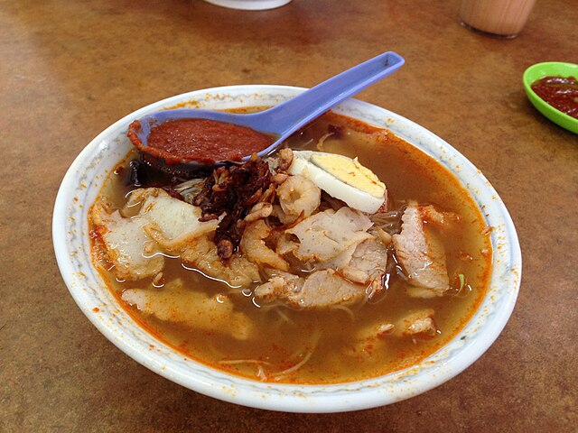{kind=link}
Penang's Hokkien Mee is a famous Malaysian noodle soup known for its aromatic prawn-based broth,
usually served with egg noodles, bean sprouts, prawns, and sometimes pork slices or fried
shallots.
Read more
Ikan Bakar
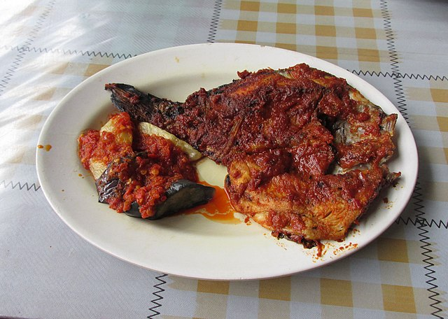{kind=link}
In Perlis, grilled fish is a well-known dish influenced by Malay, Chinese, and Thai cooking
traditions.
It is simple to prepare, using ingredients such as red chilies, salt, pepper, light soy sauce,
oyster
sauce, fish sauce, Thai chili sauce, and a unique local chili sauce made in Perlis.
Read more
Dodol
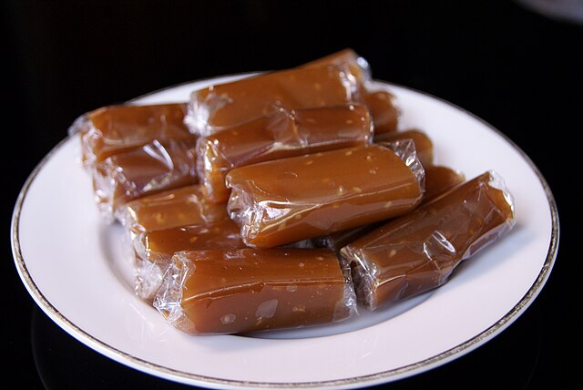{kind=link}
Traditional sweet popular across Southeast Asia, especially in Malaysia. It made from
coconut milk,
rice flour, and palm sugar to achieve chewy, sticky, toffee-like . Required slowly cooked
over low
heat for several hours, with constant stirring to ensure it reaches a thick, sticky
consistency.
Read more
Hainanese Chicken Rice

{kind=link}
A well-known and must-try dish in Perak, also referred to as Wenchang chicken, which
originates
from traditional Hainanese cuisine. It typically consists of fragrant white rice, kampung
chicken
gently poached in broth, celery, and a side of chilli sauce to enhance both flavour and
presentation.
Read more
Nasi Kerabu
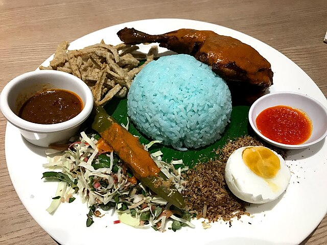{kind=link}
A signature traditional dish in the Malay community and an iconic part of East Coast
Malaysia’s culinary
heritage. It features blue-tinted rice, a mix of fresh herbs for aroma, and various side
dishes, creating
an appealing and flavourful meal that represents the region’s identity.
Read more
Pulut Panggang
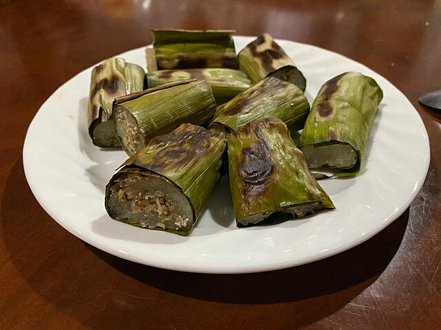{kind=link}
A popular Terengganu street snack, also known in English as Grilled Glutinous Rice Packets
or Rolls.
It is loved for its combination of sweet, savoury, and sometimes mildly spicy flavours,
depending on the
filling. The glutinous rice is wrapped in banana leaves before being served.
Read more
Nasi Kebuli
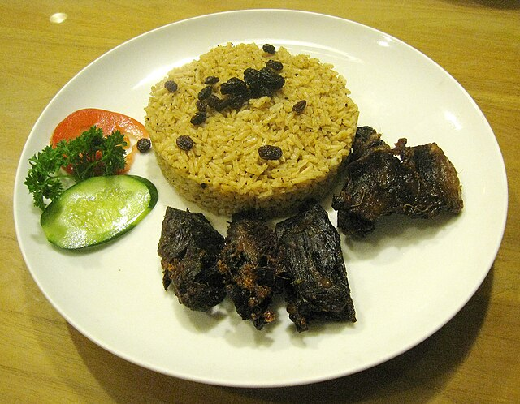{kind=link}
A rice dish cooked with coconut milk, salt, and occasionally sugar and oil, usually prepared
using a rice
cooker or by steaming. Spices such as cumin, ginger, and garlic, along with other
variations, give the dish
its distinctive aroma and taste.
Read more
Nasi Ambeng
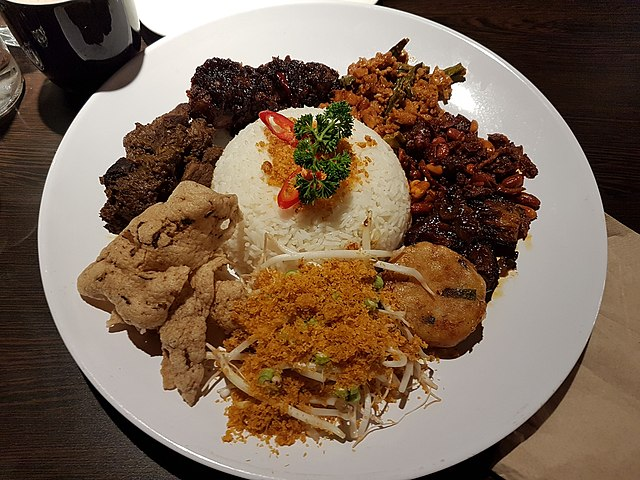{kind=link}
A traditional Javanese-Malay dish popular in Selangor, known for its generous serving style.
It features a
mound of rice surrounded by side dishes such as rendang, sambal, fried chicken, and
serunding, served on a
large platter meant for sharing among several people.
Read more
Apam Johol
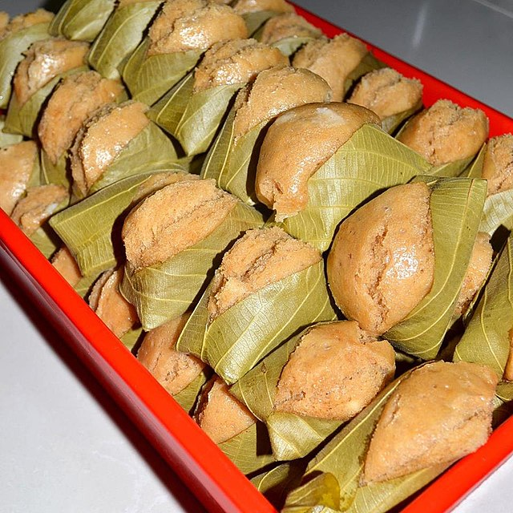{kind=link}
A traditional cake from Johol, Negeri Sembilan, also called “Apam Daun Rambai” because it is
wrapped in
rambai leaves, giving it a fragrant aroma. Its main ingredients are flour, yeast, coconut
milk, and brown sugar.
Read more
Popiah
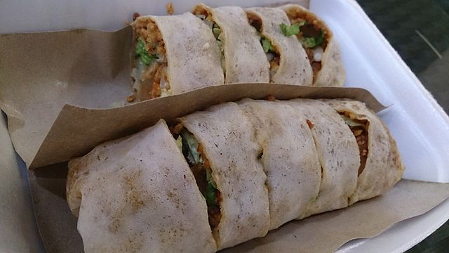{kind=link}
A soft, fresh spring roll made with a thin, crepe-like wrapper. The filling typically
includes cooked
vegetables, tofu, egg, bean sprouts, and sometimes meat, topped with sauces. The combination
can vary,
but it is most often enjoyed as a snack.
Read more
Mee Bandung Muar
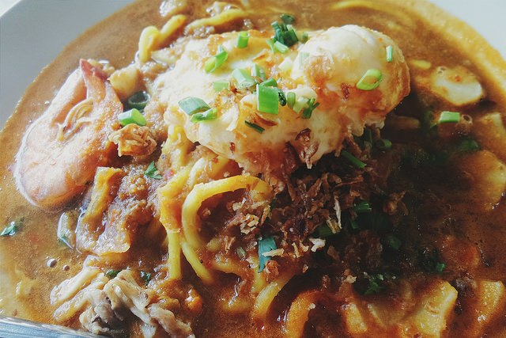{kind=link}
A famous noodle dish from Muar, Johor, featuring a thick broth made from shrimp, spices, and
other
seasonings. It is commonly served with eggs, meat, and vegetables, offering a unique balance
of
savoury, sweet, and slightly tangy flavours.
Read more
Sabah & Sarawak
Kuih Penjaram
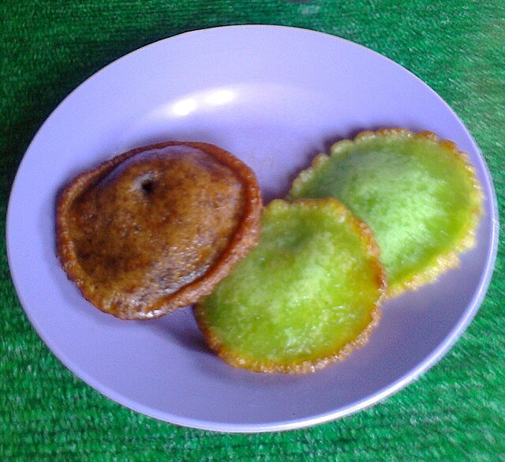.jpg){kind=link}
A traditional Bruneian Malay cake from Sabah, also nicknamed “cake UFO” for its distinctive
shape.
Soft on the inside with a crispy edge, it is made from a mixture of flour, corn flour,
coconut milk,
and sugar, and is often enjoyed during festivals or as an evening snack.
Read more
Hinava
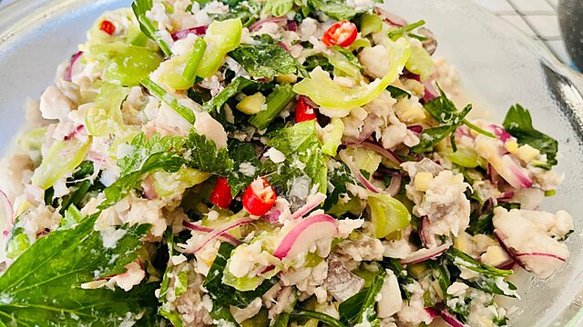{kind=link}
A Kadazan-Dusun delicacy from Sabah made with raw fish marinated in lime juice, then mixed
with other
ingredients. Often described as a type of fish salad, it has a sashimi-like texture and a
pale, milky
colour, and is typically served during festive occasions.
Read more
Kolo Mee

{kind=link}
Also known as “Koh Loh Mee,” this well-loved Sarawak noodle dish uses springy egg noodles as
its base.
It is usually topped with minced pork, slices of char siu, and crispy fried onions. The name
“Kolo”
comes from the Cantonese term gon lo, meaning “dry mixed,” which reflects the dish’s
signature dry,
tossed style.
Read more
Kompia
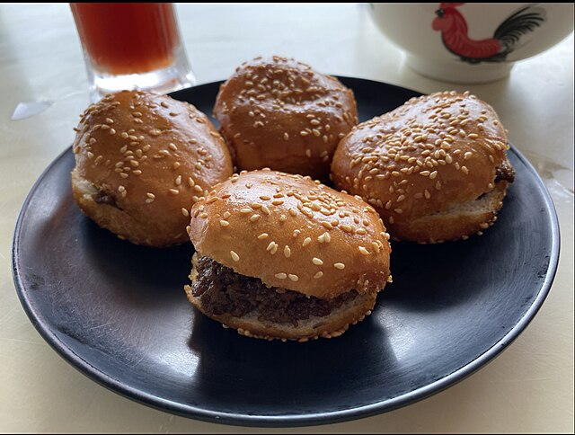{kind=link}
A traditional Sarawak bread, sometimes called “Foochow bagels,” popular among the local
community.
It is flat and chewy, typically baked in a charcoal-fired clay oven, and resembles a bagel
in shape.
Fillings vary, including options such as lard with scallions, peanuts, BBQ pork, or coconut.
Read more